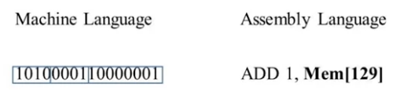
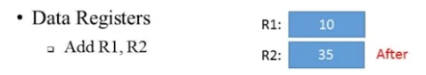

Nand2Tetris week4
上周我不知道自己在做什么，好像很忙，但是啥东西都没做出来，太难受了。这周得改改自己的生活节奏了。这周的课程是Machine Language，应该是要讲如何设计ISA了。
Overview
汇编是最能贴近的Machine Language的描述方式，同时还具备一定的可读性，如下图，这里的机器指令的汇编化表述方法就如下：

Machine Languages: Elements
他是特定的软硬件接口
- 他定义了硬件支持怎样的操作（数学操作、逻辑操作、控制流）
- 定义操作执行的对象
内存层次化
- 访问内存地址开销是昂贵的
- 需要支持长地址，那么位数需要大
- 从内存中取数需要时间
这也就是为什么要设计多个cache，越接近cpu的内存块越小，速度越快。
其中最靠近cpu内存块就是registers，其主要存储一些cpu操作时的参数，比如做加法时，所操作的数据就存放在寄存器中：

Hack Cpu architecture
----- ----------------- ------------------
| | | [A register] | = data out => | |
| rom | = instruction => | cpu | | ram |
| | | [D register] | <= data in = | [M register] |
----- ----------------- ------------------rom中存储了代码指令，cpu加载指令然后对ram中的数据进行读取、计算、写入等操作。 Hack cpu中设置了两种指令集，A-instruction和C-instruction。设置了三种寄存器A,D,M. A 与 D中存储了16bit的值，而M寄存器中存储的是A作为地址时对应的寄存器（即把A作为指针，M=*A）
- A instruction
语法： @value 含义： 将A寄存器设置为value，同时意味着M寄存器指向了RAM[A]
- C instruction
语法：dest= comp; jump 含义：将comp的值设置到dest中，如果满足跳转的操作，那么跳转到ROM[A]开始继续执行。 comp的命令可以是任何有意义的运算操作，dest可以是三种寄存器中任意一个，jump也可以是任意一种跳转方式。
input / output
在底层的操作中，所有的命令或者交互方式都是通过bit流的方式操作的，但是每次传输数据的开销是很大的，hack computer的设计就是把ram中的一块作为screen memory map。
----- ----------------- ------------------
| | | [A register] | = data out => | |
| rom | = instruction => | cpu | | ram |
| | | [D register] | <= data in = | [M register] |
----- ----------------- | |
|------------------|
| screen memory map|
------------------通过直接向对应内存写入即可有效的操作屏幕。
输入呢也类似，直接映射一块内存区域去读取当前键盘的keycode即可。
hack programing, part 1
我们有以下三个寄存器：
D: data 寄存器
A: address 寄存器
M: 当前选中内存寄存器 M=RAM[A]相当于我们有一个指针(A),一个临时变量(D),一个快速取数据操作(M=*A). 有了这三板斧,我们就进行一些计算啦, 举个🌰:
// D = 10
@10
D=A
// D++
D=D+1
// D=RAM[17]
@17
D=M
// RAM[17]=0
@17
M=0
// RAM[17] = 10
@10
D=A
@17
M=D
// RAM[5] = RAM[3]
@3
D=M
@5
M=D我们的asm代码会被加载到rom区被执行.因此对于简单的代码,也需要在后面加上无限循环,避免执行了未知的指令. 最后还介绍了为了便于编程,hack assembly提供了内置的符号:
symbol value
R0 0
R1 1
....
R15 15
SCREEN 16384
KBD 24576
SP 0
LCL 1
ARG 2
THIS 3
THAT 4这样在代码中应该编写@R15用于表示虚拟寄存器. SCREEN等用于寻址外部IO.